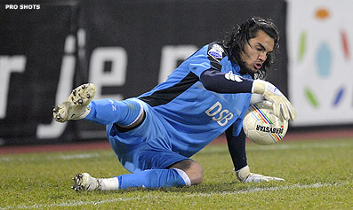

Roda JC krijgt complimenten, matig AZ de punten
Koploper AZ beleefde een lastige avond tegen Roda JC. De gasten uit Limburg
domineerden tijdens het grootste gedeelte van de wedstrijd. Toch ging AZ er
met de winst vandoor: 1-0.
In het DSB Stadion was een half uur gespeeld toen Mounir El Hamdaoui naast
het doel van Roda-keeper Bram Castro schoot. Het was pas het eerste
wapenfeit van AZ. De Alkmaarders werden in eigen stadion vroeg vastgezet
door een scherp Roda en kwamen er lange tijd niet aan te pas.
Roda speelde goed. De Limburgers namen het doel van Sergio Romero
aanvankelijk van afstand onder vuur, maar kregen vlak voor het rustsignaal
een levensgrote kans op 0-1. Andres Oper werd vrijgespeeld, maar de Est
stuitte op de benen van Romero.

AZ-coach Louis van Gaal greep in de rust door met Graziano Pellè (hij
verving Demy de Zeeuw) een extra aanvaller binnen de lijnen te brengen. Het
leidde niet direct tot beter voetbal, maar die wissel bleek toch bepalend
voor het verloop van de wedstrijd.
Moussa Dembélé zakte namelijk een linie en de sterke Belg werd in de
slotfase vanaf het middenveld de animator, die AZ op het juiste spoor
bracht. Na een goede actie van Dembélé en een slimme pass in de loop van El
Hamdaoui was het in de 76ste minuut raak. De topscorer van de Eredivisie
schoot uit de draai zijn zeventiende treffer binnen.
Na het doelpunt ging AZ eindelijk beter spelen. Toch kwam de koploper nog
even in problemen. Nadat Van Gaal al drie keer had gewisseld, viel Sébastien
Pocognoli uit met een hamstringblessure.
Met tien man bleef AZ op de been en kreeg Romero opnieuw geen doelpunt
tegen. AZ behoudt een voorsprong van negen punten op naaste belager FC
Twente. Roda JC moet het doen met complimenten voor het goede spel, maar
zonder punten. De Limburgers staan zestiende.
Bron: VI